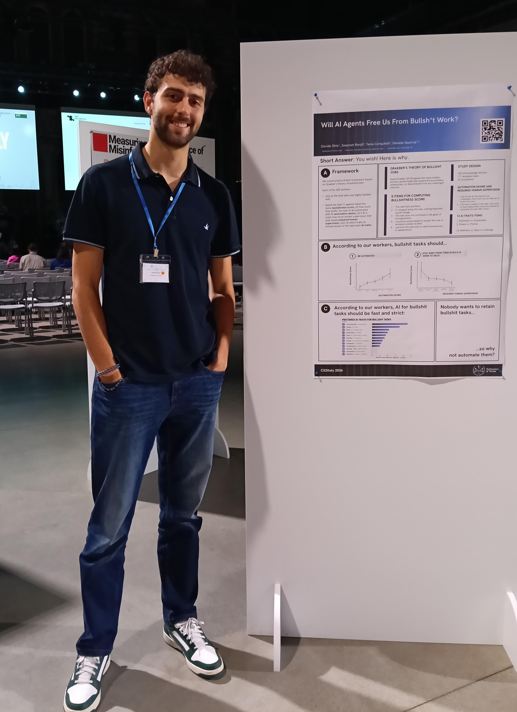

I am a PhD student at DAUIN, Politecnico di Torino, where I work on artificial intelligence. My current research interests include Responsible AI, Future of Work, and computational social science.
- Affiliation
- Politecnico di Torino
- Research Area
- Responsible AI, Workplace AI, Future of Work
- Supervisor
- Daniele Quercia
- Tania Cerquitelli
- Location
- Torino, Italy
My Research
Publications
Ongoing Projects
Active Research
In Development
AI Impact on Workplace Skills
Different AI applications impact different skills. Which one are more in danger?
In Development
AI Impact on Cognitive Processes
Is AI changing how we think? If so, how? Analysis of cognitive processes and potential shifts in human cognition due to AI interaction.
In Development
AI & Education
Are the education systems preparing students for the AI era? Analysis of curricula, skills, and labor market trends.
Contact